This project uses a pretrained text-to-image flow model, PixNerd, to denoise, generate and edit images. No training is involved. A flow model learns a velocity: given a noisy image and a time t, it predicts which direction to move to get closer to a clean image. Here t = 0 is pure Gaussian noise and t = 1 is a clean image. Part 1 looks at what that prediction does, first in one step and then in many small ones. Part 2 adds classifier-free guidance, and Part 3 uses the same sampler for editing, visual anagrams and hybrid images.
All images are 512 × 512 with RGB values in [−1, 1]. Unless stated
otherwise, the prompt is "a high quality photo", the Euler step size is
h = 0.02, and noise comes from a seeded generator starting at seed 180.
A noisy training input is a straight-line mix between a noise sample ε and a clean image x1:
x_t = (1 − t) · ε + t · x₁ ε ~ N(0, I)At t = 0 this returns the noise exactly, and at t = 1 the image. Along the line the velocity is constant, dxt/dt = x₁ − ε, and that is the target the model is trained to predict.
def interpolate(image, noise, t):
return (1 - t) * noise + t * imageI sample one ε and reuse it for every t, so the three noisy images below differ only in how much of the photo is mixed in. The same image, noise and noisy tensors are reused through Part 1.5.
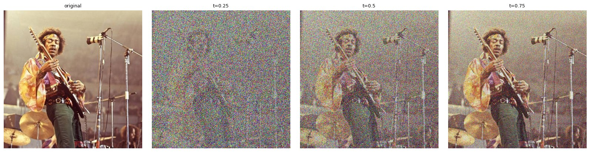
As a baseline without any learning, I first divide by t to undo the dimming in xt, then apply a Gaussian blur, with σ = 8, 4 and 1 for t = 0.25, 0.5 and 0.75.
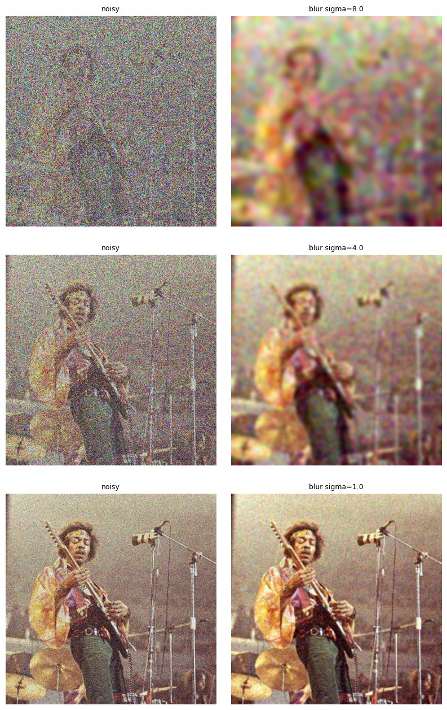
The noisier inputs use a larger σ, and a large blur takes the detail away along with the noise. At t = 0.25 the result is just colored blobs in the rough shape of a person. At t = 0.75, σ = 1 is enough and the result is decent but soft. Noise and fine detail are both high frequencies, so a blur cannot remove one and keep the other.
The model predicts the velocity v̂ at (xt, t). The remaining distance to t = 1 is 1 − t, so a single jump along that velocity gives an estimate of the clean image:
x̂₁ = x_t + (1 − t) · v_θ(x_t, t, c)
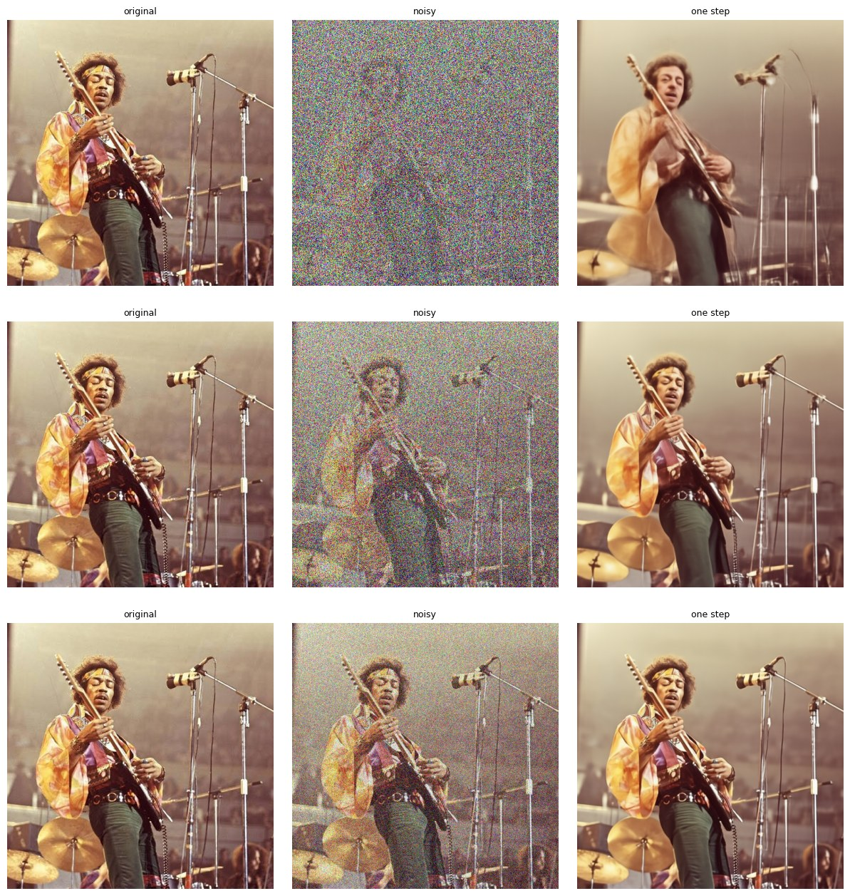
Every estimate is clean, unlike the blur. How faithful it is depends on t. At t = 0.75 it is nearly identical to the original. At t = 0.25 the model keeps the layout (a guitarist at a mic stand) but invents a different person: a different face, no headband, plainer clothes. There is too little of the photo left to recover, so the model fills in a plausible guess.
Each panel below shows the update the model makes in that single jump, (1 − t)v̂, next to the update that would recover the original exactly. Using the saved noise, the true velocity is vgt = x1 − ε, so the true update is x1 − xt. The error map is the RMS over RGB of the difference at each pixel.
v_pred = predict_velocity(x_t, t, condition)
v_gt = clean_image - epsilon
error = torch.sqrt((((1 - t) * (v_pred - v_gt)) ** 2).mean(dim=1))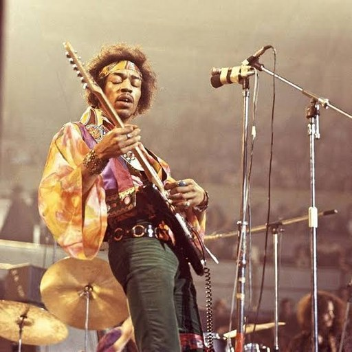
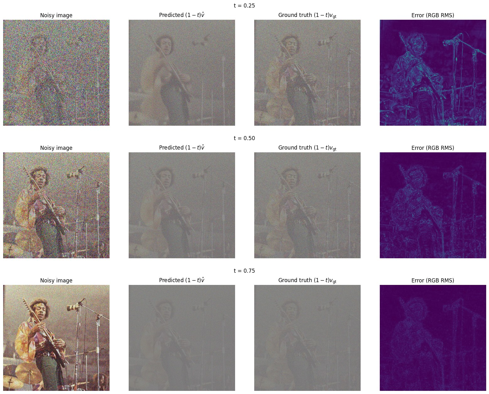
Both updates look like a faded, noisy copy of the photo, since they move the image toward x1 and away from ε. The error sits on edges and in the detailed parts of the image, such as the face, the guitar and the mic stands, not in the flat background. It shrinks quickly as t grows. At t = 0.25 the predicted update is missing the headband and the pattern on the shirt, the same details the one-step estimate got wrong. By t = 0.75 the error map is almost empty.
Instead of one big jump, Euler sampling takes many small steps and asks the model for a new velocity at each one. When a step would go past t = 1, it is shortened to end there exactly.
x_{t+h} = x_t + h · v(x_t, t)
def euler_sample(x_start, t_start, step_size, velocity):
states = [(t_start, x_start.clone())]
while t_start < 1:
if t_start + step_size > 1:
step_size = 1 - t_start
x_start = x_start + step_size * velocity(x_start, t_start)
t_start = t_start + step_size
states.append((t_start, x_start.clone()))
return x_start, statesStarting from the saved t = 0.5 input, that is 25 updates:
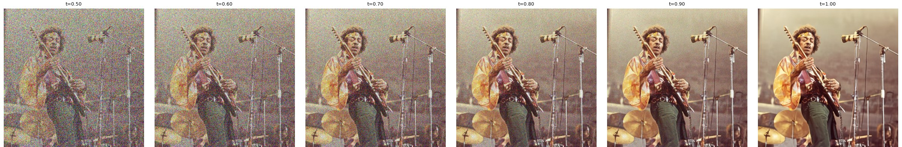
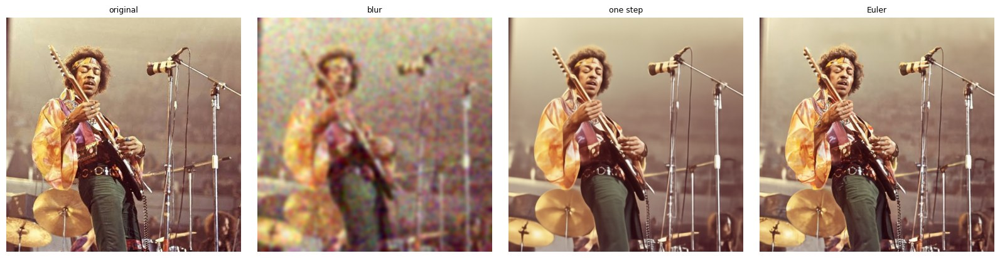
| method (from t = 0.5) | MSE to original |
|---|---|
| Gaussian blur | 0.0349 |
| one step | 0.0099 |
| Euler, 25 steps | 0.0117 |
Both model-based results are far better than the blur. Euler looks the sharpest, with crisper fabric texture and cymbal edges, yet its MSE is slightly higher than the one-step result. A single jump lands near the average of all clean images that could explain the input. That average is a little soft, and MSE rewards it. Taking small steps commits to one specific sharp image, which looks more real, but wherever its invented detail differs from the true photo, MSE counts it as error.
Starting at t = 0 from pure noise, with 50 Euler steps, the sampler generates an image from nothing:
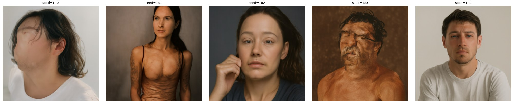
The generic prompt strongly favors people: all five samples are portraits against a plain backdrop. Without guidance the prompt only loosely steers each sample, so the results range from realistic portraits (seeds 182 and 184) to looser, more abstract faces (seeds 180 and 183).
Classifier-free guidance runs the model twice, once with the prompt and once with an empty prompt, and pushes the velocity further in the direction the prompt adds:
v_cfg = v_c + w · (v_c − v_u)vc uses the prompt and vu uses
"". w = 0 gives the
plain conditional velocity. The samples below use w = 7.
def cfg_velocity(x, t, condition, w, predict_velocity, null_condition=''):
v_c = predict_velocity(x, t, condition)
v_u = predict_velocity(x, t, null_condition)
return v_c + w * (v_c - v_u)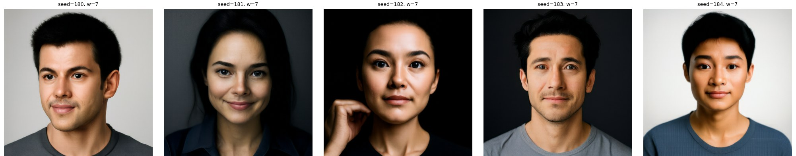
With guidance, every sample is a clean, well-lit studio portrait, including seeds 180 and 183. The noise still decides the overall layout: seed 182 keeps its pose with a hand at the cheek. The trade-off is variety. The five images now share nearly the same framing and style.
To edit an image, I noise it to some starting time with the same interpolation as in Part 1.1, then run the guided sampler from there to t = 1. The lower the starting time, the more noise is added and the more the model is free to change.
def edit(image, noise, t_start, condition, predict_velocity, w=7, step_size=0.02):
x_t = interpolate(image, noise, t_start)
v_func = lambda x, t: cfg_velocity(x, t, condition, w, predict_velocity)
denoised, _ = euler_sample(x_t, t_start, step_size, v_func)
return denoised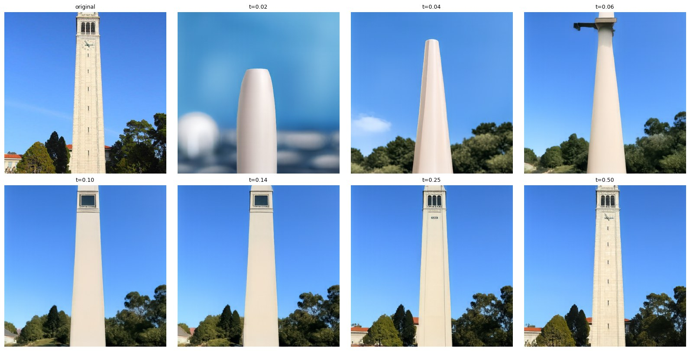
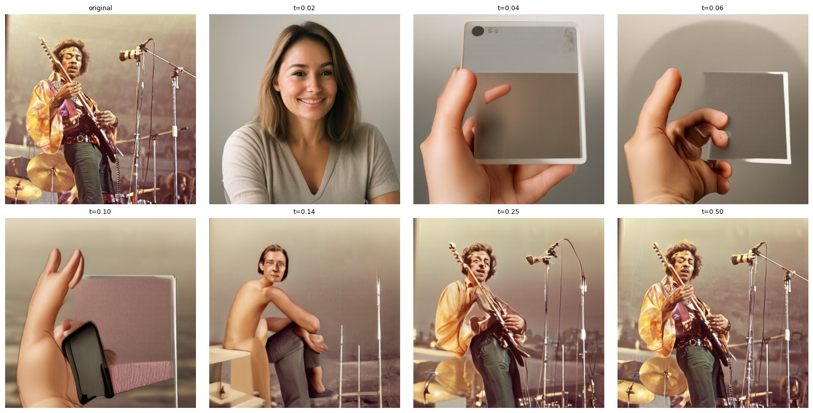
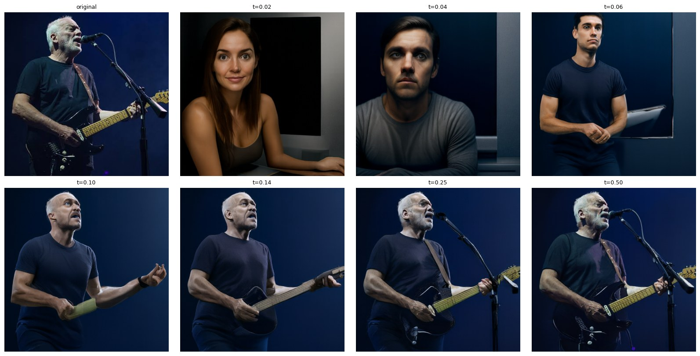
The results follow the same pattern for every image. From 0.02 to 0.06 the output is a new image that keeps only the overall colors. Since the prompt says nothing specific, those are often generic stock-photo scenes: a portrait, or a hand holding a phone. By 0.10 to 0.14 the layout comes back: the tower stands in the same place against the same sky, and David reappears in a dark shirt under blue light. By 0.25 the subject is clearly recognizable, and at 0.50 the output is almost the original, slightly cleaned up.
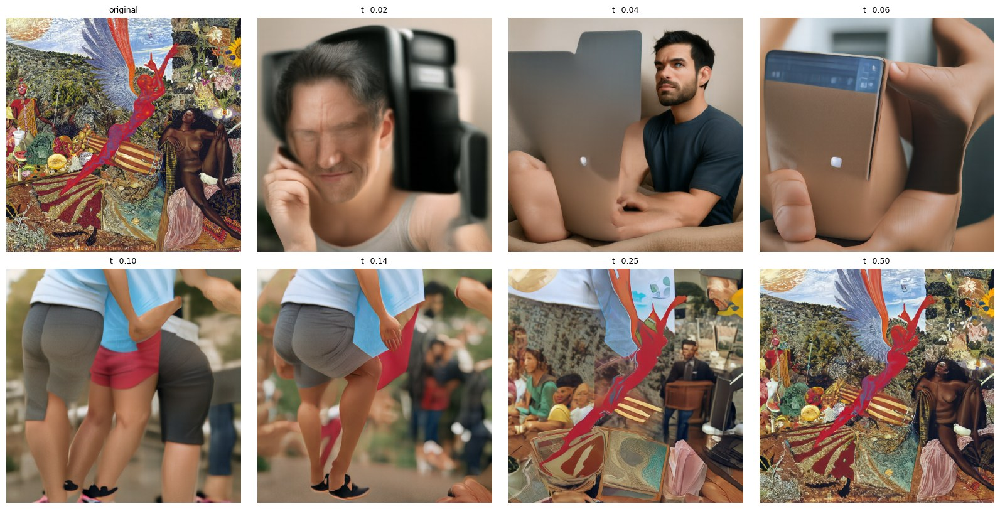
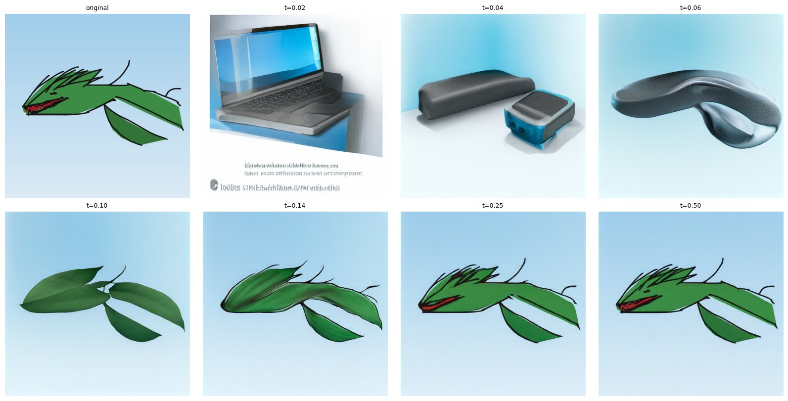
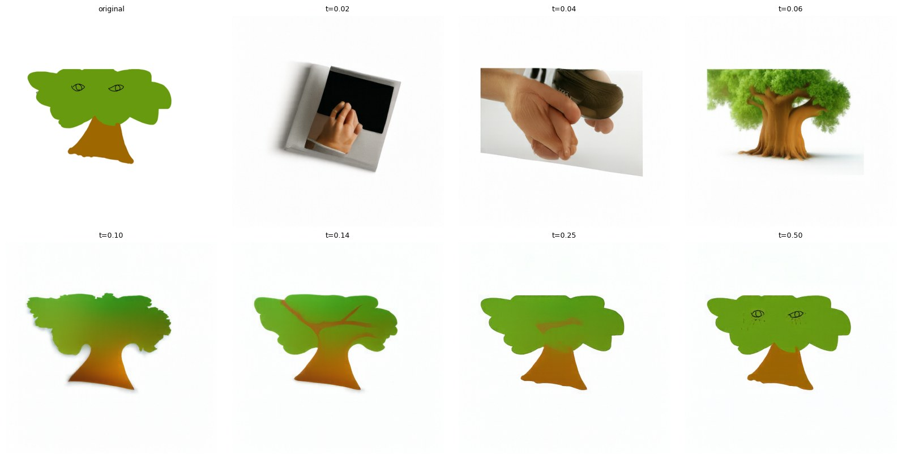
The drawings are where editing is most useful: a rough sketch becomes a photo with the same shape and colors. At 0.06 the cartoon tree becomes a realistic tree with the same silhouette, and at 0.10 the green dragon turns into a sprig of real leaves. From 0.25 up, both stay recognizably drawings, because by then the flat colors and black outlines are already settled. The album cover is a dense collage, so at low starting times the model reinterprets it as ordinary photos. By 0.25 the collage style returns, with the red angel kept in place.
This is the same procedure with a prompt of my own in place of "a high quality photo". Now the low starting times move toward the prompt instead of toward a generic photo.
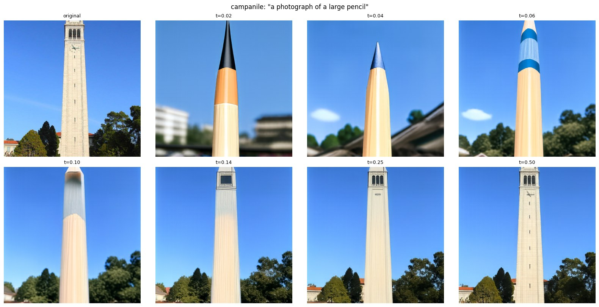
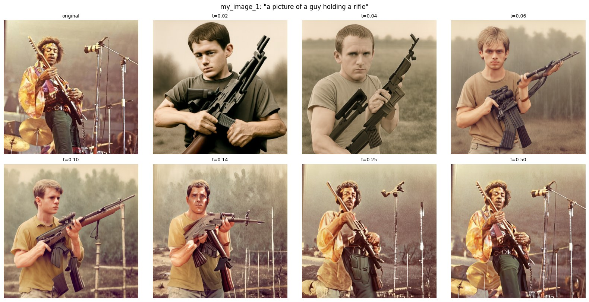
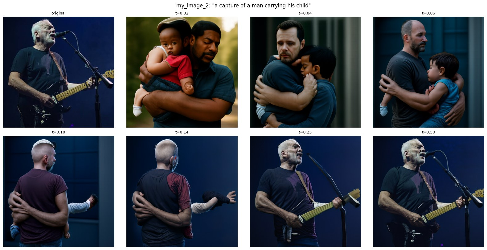
Each prompt keeps the shape of its subject: the tower is tall and thin like a pencil, and a guitar is held roughly like a rifle. The most interesting results are in the middle starting times, where both the prompt and the image show. At 0.10 to 0.14 the Campanile becomes a pencil with wood grain and a graphite tip, standing in the original scene. At 0.25 Jimi holds a rifle in his original pose and outfit. At 0.10 to 0.14 David's photo becomes a man seen from behind carrying a child, under the same blue stage light.
A visual anagram looks like one thing upright and another upside down. At every step I compute the guided velocity for prompt 1 on the image, and for prompt 2 on the image rotated 180°. I rotate the second velocity back and average the two:
v₁ = CFG(x_t, t, p₁) v₂ = flip( CFG( flip(x_t), t, p₂ ) ) v = (v₁ + v₂) / 2flip rotates the image 180° (both spatial axes).
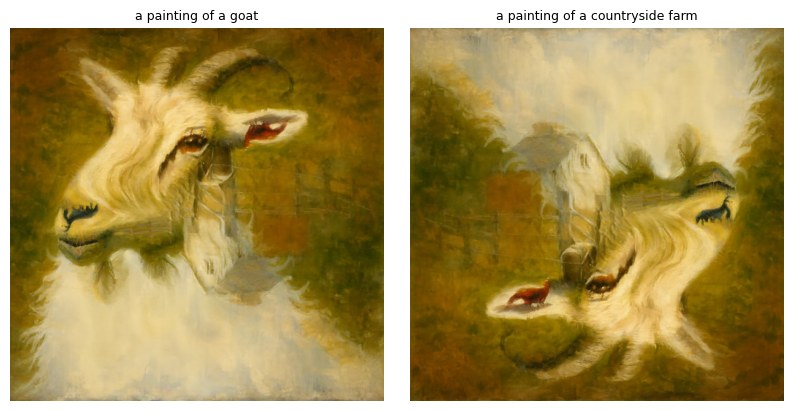
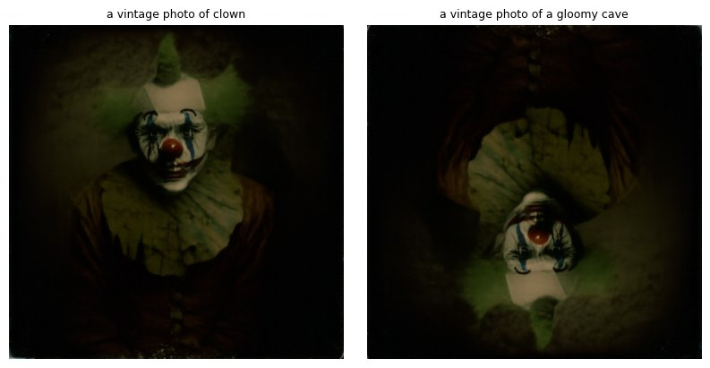
Upright, the first is a goat's head. Flipped, its white beard becomes a cloudy sky, and its horns and ears turn into a barn and animals in a field. In the second, the clown's green hair and ruffled collar become the arch of a dark cave mouth when flipped. The two prompts in each pair share a medium and a palette, so the same brushstrokes and lighting serve both subjects.
This is the same idea as Project 2's hybrids, but applied while the image is being generated. At every step, the low frequencies of the velocity come from one prompt and the high frequencies from another. Up close you see the high-frequency prompt; from a distance, or when the image is small, only the low-frequency one is left.
v = lowpass( CFG(x_t, t, p_far) ) + highpass( CFG(x_t, t, p_close) ) highpass(v) = v − lowpass(v)The low-pass is a Gaussian blur with σ = 16 and kernel size 265.
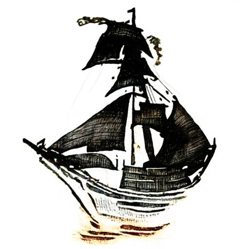
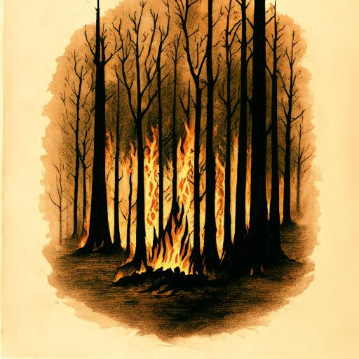
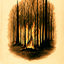
at 64 × 64Up close, the fine line work carries the image: the ship's rigging and sails, and the branches and flames of the forest. Shrinking the image removes that detail, leaving the broad light-and-dark layout that the far prompt controls. A lithograph style suits this, since its line work is almost entirely high frequency.